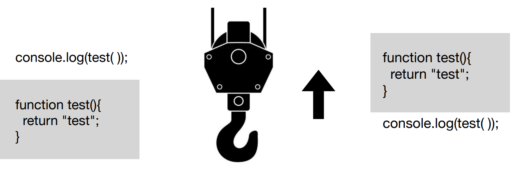

1. 매개변수가 없는 일반 사용자 정의 함수
function 함수명(){
실행할 내용;
}
2. 매개변수가 있는 함수
function 함수명(변수1, 변수2, 변수3, 변수4....){
실행할 내용;
}
3. 리턴 값이 있는 함수
function 함수명(변수1, 변수2, 변수3, 변수4....){
실행할 내용;
return 실행결과;
}
자바스크립트가 실행되면 parser가 빌드하면서 문법을 검사합니다. 이 와중에 끌어올릴 값을 선택하여 내부적으로 최상단에서 끌어 올려 처리합니다. 이것을 호이스팅 문법이라고 합니다.
2015년 자바스크립트 표준화가 되면서 새롭게 변경된 함수작성법
function 을 => (화살표로 단축)
익명함수로만 작성이 가능.